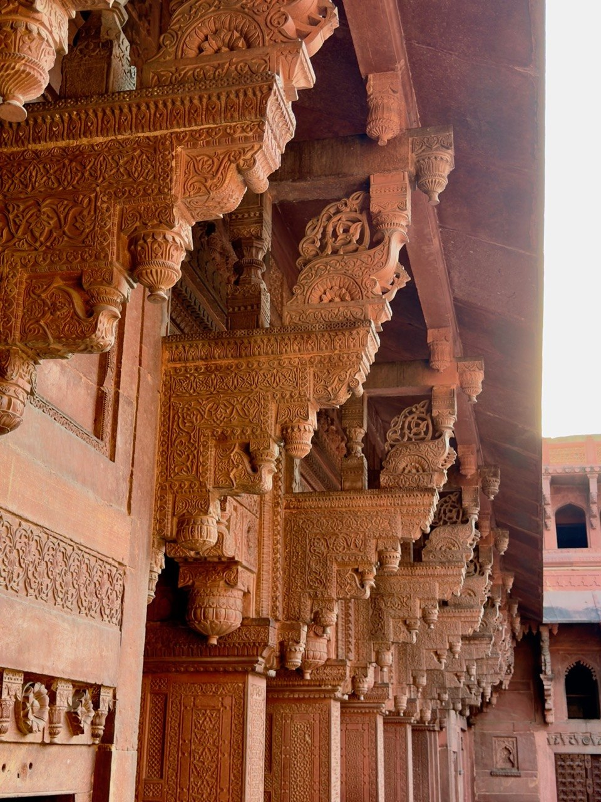
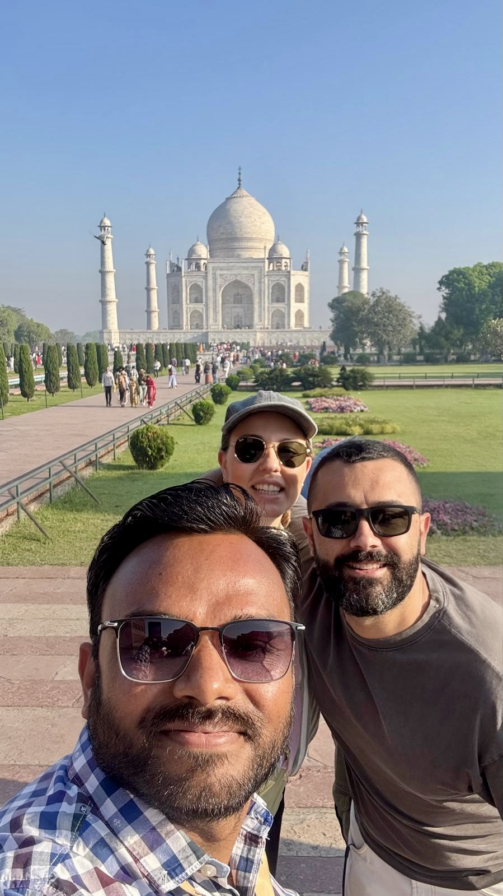
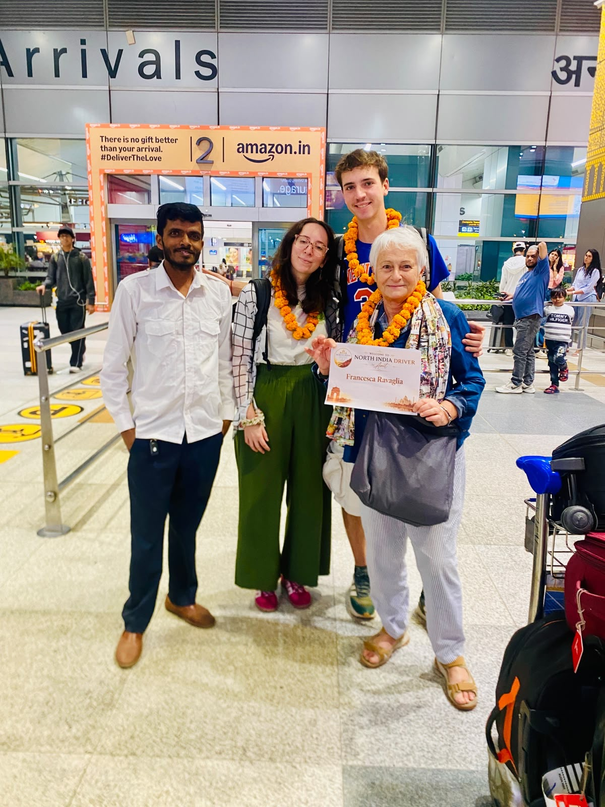

Local knowledge
Advice on sensible departure times, reliable stops, local guides and routes that work in practice.
PRIVATE TOURS · TRUSTED LOCAL SERVICE
Tailor-made journeys with Amit Bhati: your private driver, practical local reference and travel companion across North India.
Plan your journey on WhatsAppPOPULAR ITINERARIES

Delhi · Agra · Jaipur
Ideal for a first journey to India, with enough time to see the main monuments without turning every day into a race.View itinerary →
Delhi · Jaipur · Jodhpur · Udaipur · Pushkar
Forts, old cities, craft traditions and scenic roads through the Aravalli landscape.View itinerary →
Delhi · Agra · Orchha · Khajuraho · Varanasi
A balanced route combining Mughal architecture, temple heritage and life along the Ganges.View itinerary →WHY TRAVEL WITH AMIT?
Advice on sensible departure times, reliable stops, local guides and routes that work in practice.
Calm driving, a clean air-conditioned vehicle and direct communication throughout the journey.
Private travel allows you to slow down, add a stop or adjust the day when circumstances change.
No rotating team or anonymous booking desk: Amit remains the central point of reference.
MOMENTS FROM THE ROAD
These photographs are not decorative stock images. They document the architecture, roads, rituals and everyday scenes encountered during actual journeys.
AUTHENTIC TRAVEL PHOTOGRAPHY
REAL TRAVELLERS




 Assistenza diretta in italiano
Assistenza diretta in italianoITALIAN TRAVEL ASSISTANCE
Mario is not a hidden footer contact. He is the dedicated Italian point of reference for travellers who want to understand the service clearly before booking.
READY TO EXPLORE NORTH INDIA?